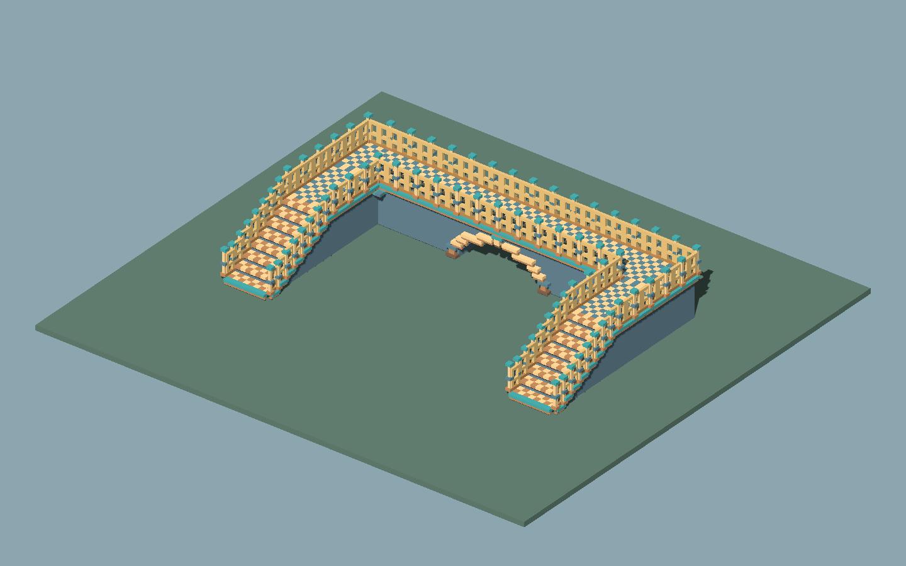
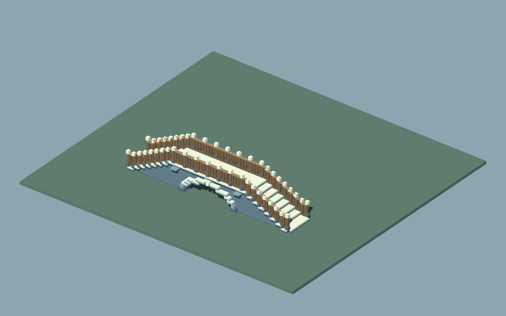
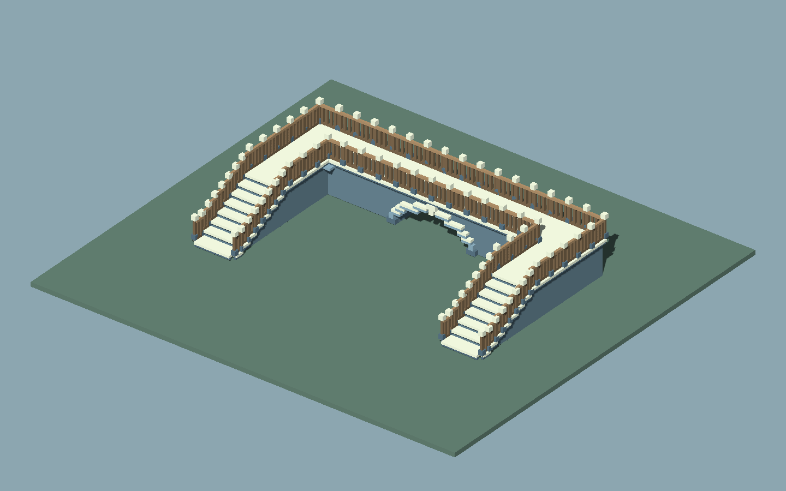
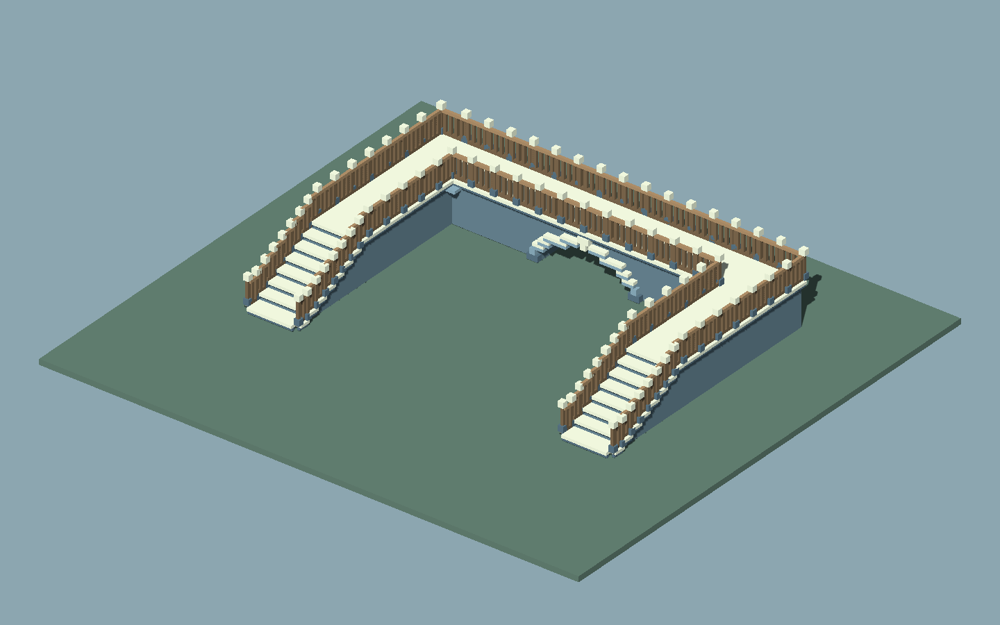
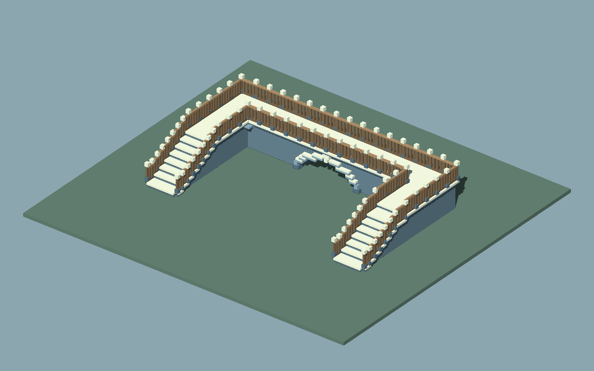

工具绘制与独立供给已后台验证，原作 G1 / 物理键鼠待补本页展示已得到的结果；整轮素材使用复刻尚未完成。
01 / 路线真的保留下来
起终点相同，中间可以绕行。
折线不是生成完就丢掉的笔迹。拐点、各节点标高和开口一起保存，之后仍能继续修改。


共同端点：(0, 0, 0) → (14, 0, 0)
小图由保存的节点绘制，是路线俯视示意。上方为对应实际模型。


02 / 相同路线，相同机位
换母件，保留桥的设计。
两张图使用同一组节点、标高、宽度、洞口和相机。B 由独立制作者按接口规范提供，接入时没有改生成器。
B · 青帽 / 浅木 / 拼面A · 石色 / 深木
620 个构件 / 10 个显示块
A：19,020 三角面 B：34,068 三角面
9 个角色完整登记，8 类实际几何改变。
换件、取消、采用、保存和独立重开均已后台验证。
03 / 不是整桥预制体
实际用到的是这九类母件。
下方全部为 B 套件真实源模型的预览。规则安排重复数量、转向、平台和收口；原生模型与导出素材都有保留。


桥底墙芯仍由规则生成。 它不是工坊母件；本轮没有把全部结构都包装成“来源素材”。九件的三视图、尺寸、枢轴和连接边界可在图解手册中查看。
04 / 在原研究工程里操作
从样例开始，再画自己的路线。
连续绘制路线
选“连续绘制路线”，按住左键画出有足够长度的转折，松手生成。默认抬高 2m，两端带台阶。
调整中段和高度
选中路线，黄色方柄改节点标高。节点列表选中拐点后，用青色方向柄平移内部直段；也可直接输入坐标。
延长、截短或开洞
“沿末段续接4米”或“删除最后一段”调整连接。桥底洞放在足够长的水平直段，转角和斜段不放洞。
预览另一套母件
在“素材套件”选择 B，预览后点“采用候选”。Esc 取消候选。新素材用“登记工坊套件…”选择登记文件。
反查源模型
窗口底部查看每个职责的实际 FBX、原尺寸与源预览，并在工程中定位；本页九件也可直接查看原生模型。
保存后继续编辑
Ctrl+S 保存原生场景；“保存路线文件”保留节点、标高和套件身份。烘焙独立预制体用于静态显示与碰撞。
本轮范围：有限正交折线，净宽 1—6 整数米；长度按 0.5m、标高按 0.25m 调整。任意平滑曲线、复杂交叉路网和自动挖开基础地形尚未包含。
05 / 已证实什么，还缺什么
把工具结果与原作研究分开看。
可编辑路线与独立供给
实际网格、碰撞、撤销、保存，以及 A/B 分别独立重开均有证据。两套素材接入前后生成器保持相同。
原作素材消费关系
复用旧研究，静态识别了 4 种候选源；几何标记仅已准备，尚未在原作实测。当前没有证实某个候选就是桥栏杆，也未完成原作消费模式复刻。
连续笔迹、手柄与取消
后台模拟了连续采样、节点手柄、撤销、取消和导航。这能验证处理逻辑，物理鼠标键盘的实际手感仍待补测。
专用桥梁接口族
当前认证同接口的完整九角色套件。素材固定尺寸，增加长度依靠重复排布。它还不是面向所有建筑、任意尺寸的通用搭建器。